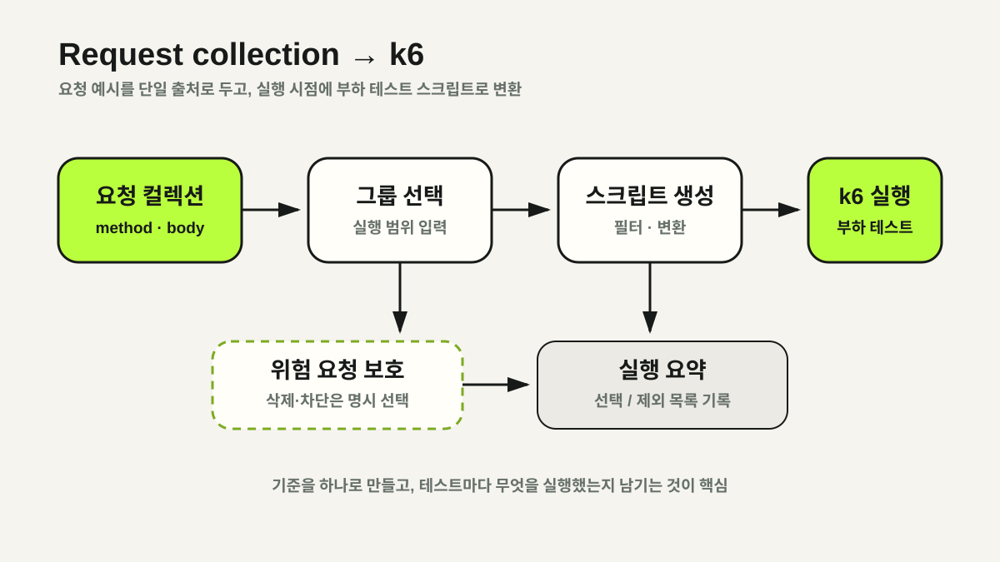

현재 구현: 저장소에 포함된 스크립트 실행
2026년 7월 공개 저장소 기준 workflow는 요청 컬렉션 저장소·버전·API 그룹을 입력받지 않습니다. 저장소에 포함된 whole-user-flow.js와 JSON 파일을 부하 발생기에 동기화해 실행합니다. 따라서 이 글의 생성기 흐름은 현재 동작을 설명하는 것이 아닙니다.
현재 스크립트에는 stage URL, 테스트 계정 형식과 인증용 값이 코드에 직접 들어간 부분이 있습니다. 대부분의 HTTP 호출은 응답 status를 명시적으로 검사하지 않고 k6 threshold도 정의하지 않아, 요청이 실패해도 workflow 자체는 성공으로 끝날 수 있습니다.
현재 구현 근거: Load Test Run workflow · run_k6.sh. 두 파일은 저장된 whole-user-flow.js와 JSON을 부하 발생기에 동기화해 실행하는 현재 흐름만 보여 줍니다. 아래의 request collection 생성기 설계가 구현됐다는 근거로 사용하지 않습니다.
확인한 문제: 요청 정의가 두 곳에 존재함
k6 스크립트가 method, path와 body 예시를 직접 들고 있으면 서버 API가 바뀔 때 같은 정보를 다시 수정해야 합니다. 파일명이 “전체 사용자 흐름”이어도 실제 호출 범위와 성공 조건이 코드에만 숨어 있으면 결과가 무엇을 검증했는지 설명하기 어렵습니다.
이 문제를 줄이기 위해 API 요청 예시를 관리하는 컬렉션을 입력으로 받고 실행 시점에 k6 코드를 생성하는 방식을 목표 설계로 검토했습니다. 컬렉션이 실제 API 계약을 대표하는지, 인증 값과 동적 데이터 의존성을 어떻게 표현할지는 구현 전에 별도로 확인해야 합니다.

목표 구조: 생성 실패를 명시적으로 드러내기
목표 구조에서는 workflow가 요청 컬렉션의 정확한 revision을 가져오고, 지원하는 요청만 k6 코드로 변환한 뒤 선택·제외·변환 실패 목록을 함께 남깁니다. 컬렉션을 읽지 못하거나 지원하지 않는 요청 형식이 있으면 오래된 script로 조용히 fallback하지 않고 실행을 실패시키는 편이 결과의 기준을 하나로 유지합니다.
proposed workflow input
├─ request collection repository
├─ requested revision
└─ enabled API groups
proposed run
├─ resolve revision to full commit SHA
├─ generate k6 script
├─ validate selected / skipped / unsupported requests
├─ write execution manifest
└─ execute k6 with checks and thresholdsJSON, text, XML과 multipart를 모두 지원한다고 가정해서는 안 됩니다. 생성기가 실제로 파싱하고 검증하는 형식만 지원 목록에 두고, 나머지는 summary에 표시한 뒤 실패 또는 명시적 제외로 처리해야 합니다.
branch·tag가 아니라 full commit SHA 기록
branch와 이동 가능한 tag는 같은 이름이 다른 commit을 가리킬 수 있으므로 불변 버전이 아닙니다. 사용자가 branch나 tag를 입력하더라도 실행 전에 full commit SHA로 해석하고, 서버 commit·collection commit·생성기 version·k6 script hash·입력값을 하나의 manifest에 보존해야 같은 실행을 추적할 수 있습니다.
현재 workflow에는 이 전체 manifest가 없습니다. 따라서 목표 구조를 적용하기 전까지는 실행에 사용한 checked-in script의 repository commit을 기준으로 범위를 해석해야 합니다.
API 그룹 선택은 목표 입력으로 분리
모든 요청을 항상 실행하면 테스트 목적과 데이터 영향 범위가 흐려집니다. 목표 설계에서는 조회 중심 기본 흐름과 비용이 큰 기능, 데이터를 변경하는 기능을 구분합니다.
- 기본 사용자 흐름은 명시적 allowlist로 선택
- 관리자 기능·파일 업로드·외부 과금 API는 기본 비활성화
- 삭제·탈퇴·차단처럼 되돌리기 어려운 요청은 별도 opt-in
- 그룹 미분류 요청은 자동 포함하지 않고 생성 단계에서 실패 또는 경고
이 분류와 생성기는 아직 구현되지 않았습니다. 실제 적용 시에는 요청 간 동적 ID·인증 token·데이터 준비와 정리 순서도 컬렉션만으로 표현 가능한지 검증해야 합니다.
구현 전에 필요한 통과 조건
- 성공 판정 — 핵심 요청마다 status와 응답 조건을 검사하고, 오류율·응답 시간 threshold를 넘으면 k6가 non-zero로 종료되어야 합니다.
- secret 처리 — 계정·password·token을 script나 summary에 넣지 않고 실행 환경에서 주입하며 log에서 마스킹해야 합니다.
- 대상 제한 — 허용한 비운영 domain만 실행하고 URL을 입력받는다면 allowlist로 검증해야 합니다.
- 부하 제한 — VU·duration·iteration의 상한과 승인 절차를 두고 외부 API timeout·rate limit을 반영해야 합니다.
- 추적성 — 선택·제외·실패 요청과 정확한 commit SHA, script hash, threshold, 실행 입력을 manifest로 남겨야 합니다.
정리: 구현 결과가 아니라 다음 설계의 기준
요청 컬렉션을 단일 출처로 쓰는 접근은 중복을 줄일 수 있지만, 현재 저장소에는 이 구조가 구현되어 있지 않습니다. 지금 확인할 수 있는 성과는 checked-in script를 원격 부하 발생기에서 실행하는 흐름이며, 생성·그룹 선택·threshold·manifest는 후속 설계 범위입니다.
따라서 이 글은 완료 보고가 아니라 현재 구현과 목표 상태 사이의 차이를 공개한 설계 문서로 유지합니다. 실제 구현 뒤에는 generator unit test, fixture별 변환 검증, k6 실패 전파와 비운영 환경 smoke test 결과를 근거로 상태를 갱신해야 합니다.
NEXT POST수동 AWS 인프라에서 Terraform으로 →